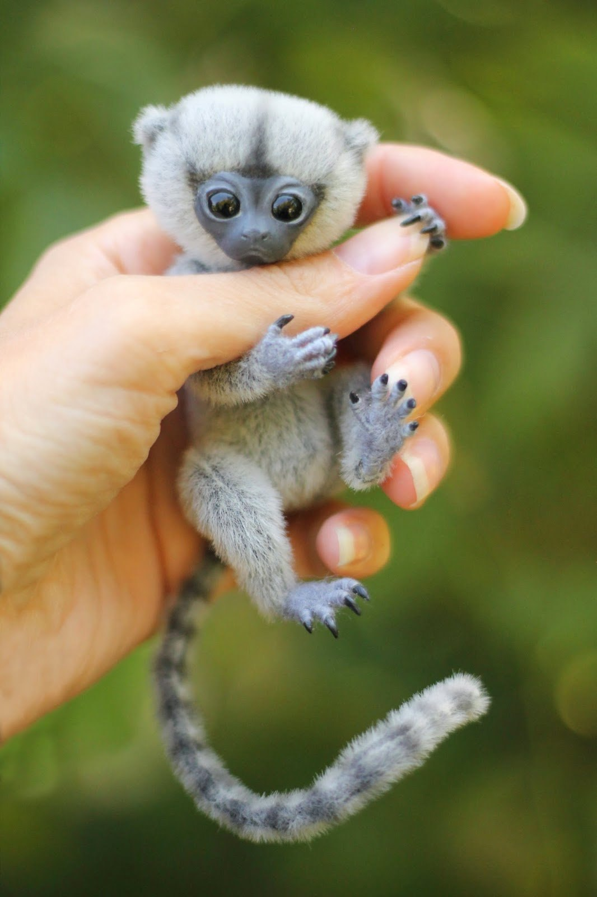
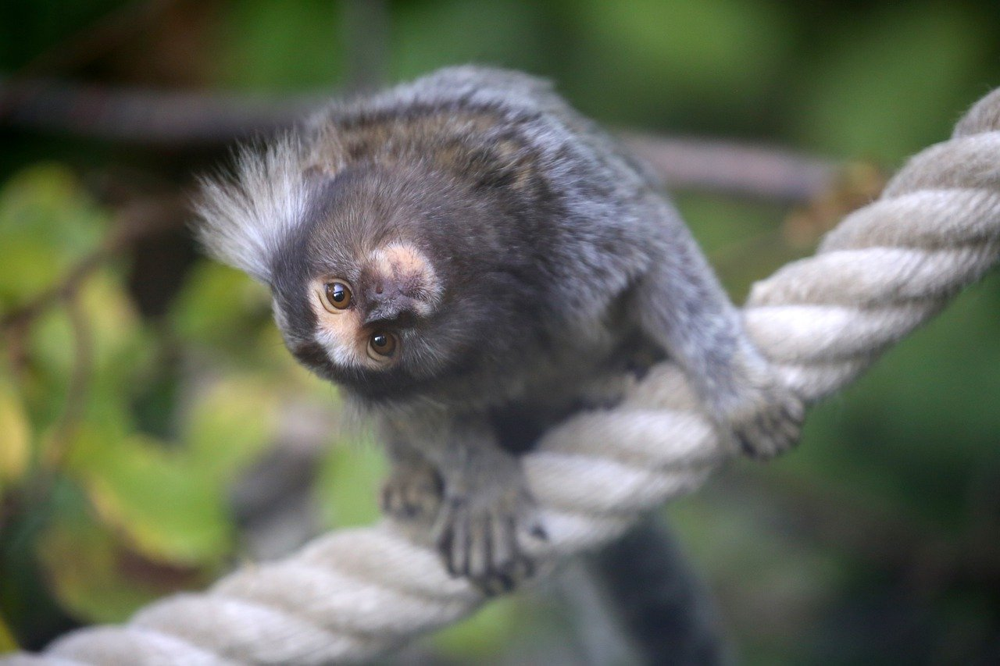
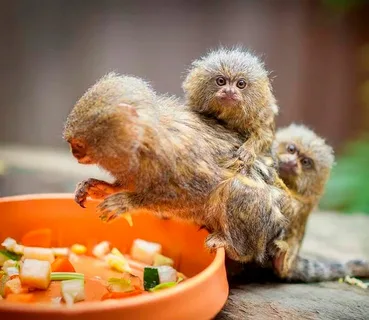
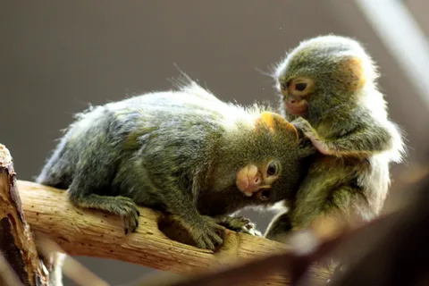
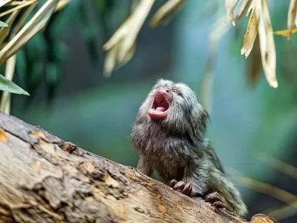
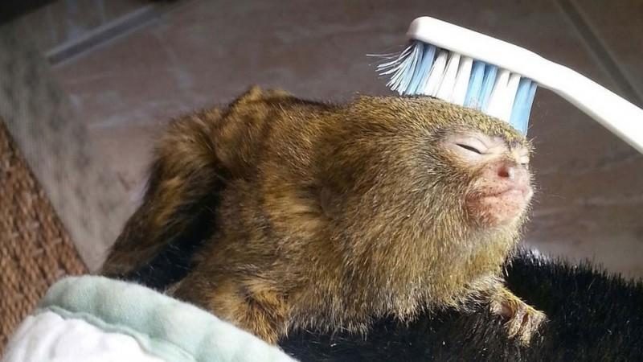

Домашняя обезьянка - мармозетка. Описание и фото мармозетки.
Мармозетка или карликовый игрун — вид приматов из семейства игрунковые. Этот примат маленьких размеров, распространённый в Южной Америке, обитает в верховьях бассейна Амазонки в Боливии, Бразилии, Колумбии, Эквадоре и Перу. Находится в списке охраняемых видов, перемещение которых через границу Таможенного Союза ограничено.

Описание мармозетки
Мармозетки относятся к крохотным приматам, которые вызывают только положительные эмоции.Этих обезьян часто называют карманными обезьянами, так как взрослые особи весят не больше ста граммов, при длине тела не больше 2-х с половиной десятков сантиметров. Если говорить о размерах, то швейцарские мармозетки и вовсе крохотные создания природы, так как их величина не превышает величины мужского пальца (большого). Поскольку у обезьянки сравнительно длинный хвост, то многие предполагают, что он достаточно функциональный и помогает животным в перемещении с ветки на ветку. На самом деле хвост обезьянки не является органом хватания и удерживания
{kind=link}
Наиболее многочисленная разновидность – серебристая мармозетка, размеры которой сравнимы с размерами обычной белки. Длина тела составляет порядка 2-х десятков сантиметров, при этом длина хвоста на пару сантиметров больше длины тела, при весе порядка 360 граммов. Уши маленькие, при этом они не покрытые шерстью, розового или красного цвета. Шерсть сравнительно длинная, при этом она шелковистая и приятная на ощупь. Как правило, хвост окрашен в черный цвет, по сравнению с остальными частями тела, которые имеют оттенки от серебристого до темно-коричневого.
{kind=link}
Чем питаются
Мармозетки питаются, как пищей растительного происхождения, так и пищей животного происхождения. Рацион питания состоит из листьев и соцветий, насекомых, птичьих яиц, а также из амфибий. В качестве живительной влаги приматы употребляют дождевую воду, которая скапливается на листьях деревьев, а также в других углублениях, расположенных на деревьях.
В случае засушливой погоды, мармозетки используют свои резцы, чтобы впиться в кору деревьев и высасывать сок. Поскольку вес мармозеток небольшой, то они способны добираться до плодов деревьев, которые располагаются на достаточно тонких ветках, что недостижимо для других видов приматов
{kind=link}
Характер шотландского вислоухого кота.
Мармозетки весьма активные животные, предпочитающие вести стайный образ жизни. Они достаточно тяжело переносят недостаток общения, поскольку являются социальными животными. Ночью эти животные спят, а вот в дневное время ведут себя достаточно активно. До 3-х десятков процентов их жизни уходит на сон, а 3 с половиной десятка процентов уходит на поиски пропитания. Если влажность повышена, то обезьянки отдыхают больше.
{kind=link}
Общаются мармозетки между собой с помощью своеобразных звуков, а также резких движений. Специалисты отмечают, что в их арсенале имеется около десятка различных щелчков, писков и других звуков. В каждой группе мармозеток насчитывается от 5 до 13 взрослых особей. Каждой группой управляет доминирующая пара. Самцы не устраивают драк, выясняя свои отношения исключительно с помощью громких криков.
{kind=link}
Уход за карликовым игруном (мармозеткой)
если для содержания других обезьянок в доме требуется много места, то для крошечной игрунки большое пространство не требуется, поскольку достигают они всего-то 15 см, а весят около 150 граммов. Тело обезьянки покрыто шерстью золотистого цвета, а мех на голове создает имитацию гривы, что выгладит очень мило и забавно. Благодаря своей шерстке животное выглядит крупнее, чем есть на самом деле. Продолжительность их жизни в неволе составляет примерно 15 лет.
{kind=link}
Приобретая питомца необходимо выяснить у продавца, родилось ли животное в неволе или было поймано на свободе. Ведь от этого многое зависит: игрунку, рожденную в природных условиях, сложно переучивать жить в клетке, это может сказаться и на продолжительности жизни питомца. Цена одной особи начинается от 60000 рублей.